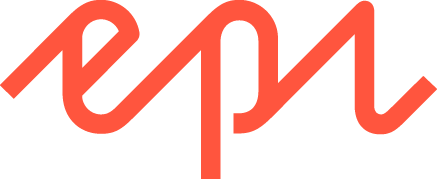
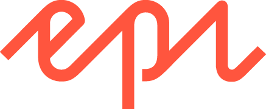

STS Alpresor
Under större delen av sommaren var jag på företaget sts alpresor för att hjälpa till med deras nya hemida. Jag fick både hjälpa till med hur siderna skulle se ut. Men också flytta innehåll från den gamla sidan till den nya. Vi jobbade i ett pogram som hetter storyblock något som påminde lite om figma i sin layout. Jag trivdes bra på minpaktik. Lärde mig också om hur ett cms system funkar. Men också hur ett bra samrabete flytete på med bra komunikation och tydliga dedlinse.
Har jobbat med två olika cms system
Det man kan göra är att jobba med UI-design (user interface), UX (user experience) och motion design för formgivning av digitala koncept och produkter. Det man ockås jobbar med är att skapa grafiska profiler till företag. Vi lär oss också att skapa prototyper på hur en hemsida/ app skulle kunna se ut. Sedan lär vi oss lite lätt hur kod funkar.
 

Se vad jag har gjort innan
Praktik STS Alpresor
Under sommaren har jag praktiserat hos sts alpresor på deras marknadsavdelning, där jag tillsammans med dem har skapat deras nya hemsida. Läs mer om vad jag fick göra på STS alpresor.